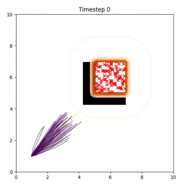
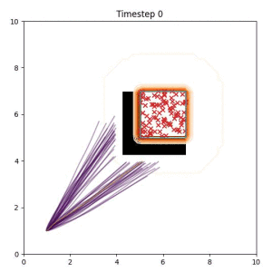

Many robotic tasks can have multiple and diverse solutions and, as such, are naturally expressed as goal sets. Examples include navigating to a room, finding a feasible placement location for an object, or opening a drawer enough to reach inside.
Using a goal set as a planning objective requires that a model for the objective be explicitly given by the user. However, some goals are intractable to model, leading to uncertainty over the goal (e.g. stable grasping of an object).
In this work, we propose a technique for planning directly to a set of sampled goal configurations. We formulate a planning as inference problem with a novel goal likelihood evaluated against the goal samples.
To handle the intractable goal likelihood, we employ generalized Bayesian inference to approximate the trajectory distribution.
The result is a fully differentiable cost which generalizes across a diverse range of goal set objectives for which samples can be obtained.
We show that by considering all goal samples throughout the planning process, our method reliably finds plans for manipulation and navigation problems where heuristic approaches fail.
The goal set planner considers a set of goal samples as the planning objective. Our planner is better than heuristic baselines at maintaining modes of the trajectory distribution, leading to a higher likelihood that at least one feasible path to the goal region will be found.
In the examples below, the purple lines represent the trajectory distribution at each timestep. The red X's represent goal samples, and the orange contours represent the true user-defined goal distribution. Note that only the "Cross Entropy" oracle baseline has access to the true underlying distribution.

Closest Point (Baseline):
Selecting one single goal from the set of goal points can lead to a goal that is difficult or impossible to reach. (The selected goal is a red "x" in the bottom left corner of the box.)
Cross Entropy (Oracle Baseline):
Using the true goal distribution density as a likelihood can lead to local minima in the trajectory estimate. Note that in some more complicated examples, the true distribution is not always available.

Goal Set Planner (Ours):
The nature of the goal set planner encourages the terminal points in the trajectory to match the goal samples. This increases the chance that a successful path to the goal region is found.
Terminal Losses
Multiple terminal losses can be used within the goal set planner formulation. We implement and analyse four different options, all of which consists of two-sample tests where both the trajectories and goal are represented implicitly in terms of samples. All losses examined are fully differentiable with respect to the trajectory.
A two-sample approximation of the KL divergence, where the density ratio is approximated by training a classifier on the sample points (Menon and Ong, ICML, 2016).
The energy statistic defined by Székely and Rizzo (JSPI 2013).
Citation
@inproceedings{pavlasek2023sets,
author = {Pavlasek, Jana and Lewis, Stanley and Sundaralingam, Balakumar and Ramos, Fabio and Hermans, Tucker},
title = {Ready, Set, Plan! Planning to Goal Sets Using Generalized Bayesian Inference},
booktitle = {Conference on Robot Learning (CoRL)},
year = {2023}
}